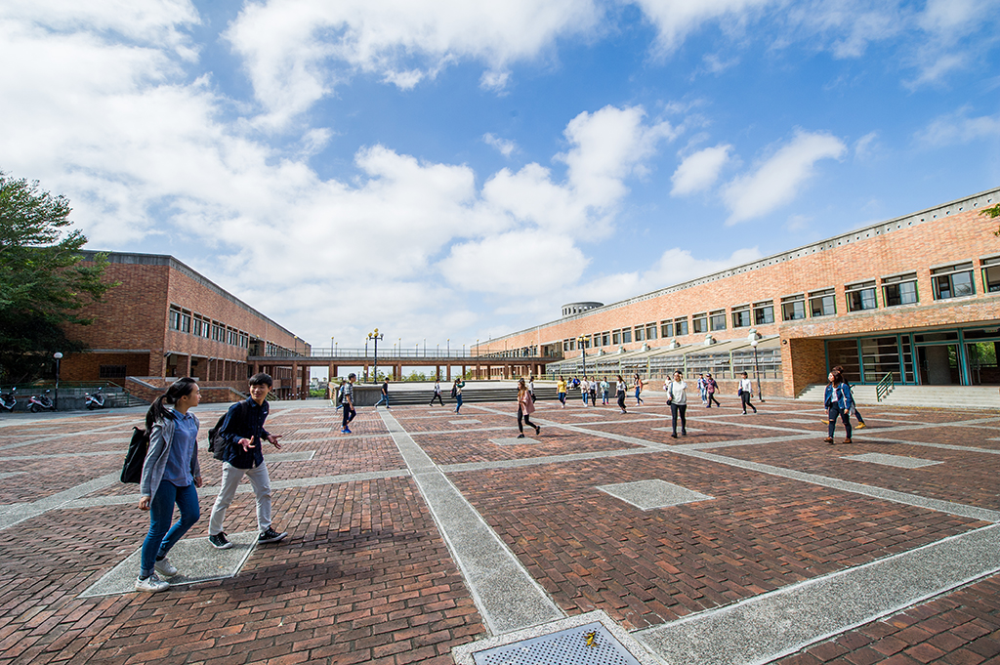
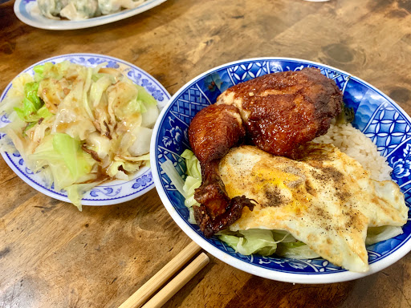
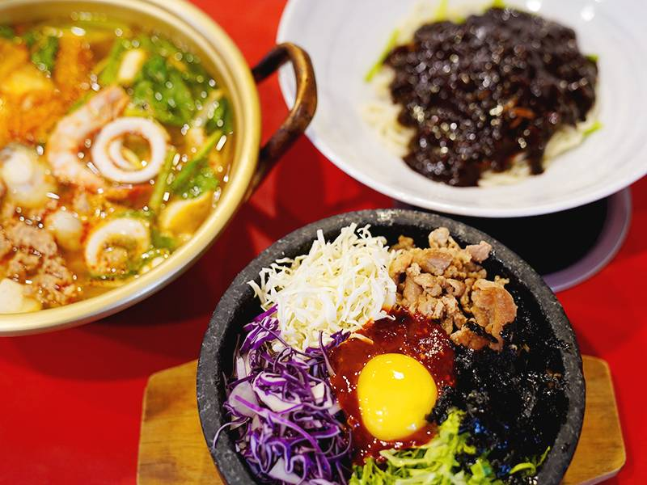
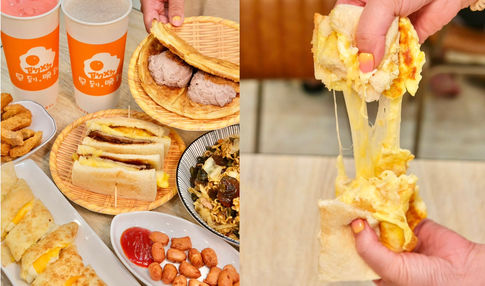
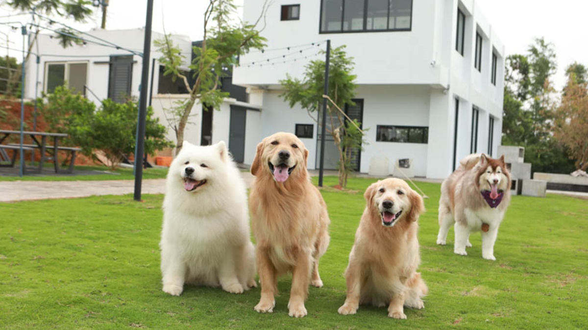
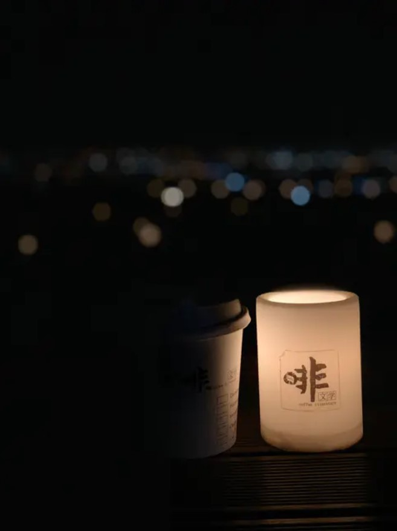

| 人生攻略 - 靜宜觀光 | |
|

圖：Providence University |
|
|
東海刈包
位於靜宜商圈，在北勢東路的鬧區。店裡有販賣刈包、各式飯麵類等中式料理，其中最推薦、也是最多人買的「排骨飯」，排骨外酥內軟，每一份排骨飯的排骨都是現炸，絕對可以讓你大學四年吃不膩！
圖：Google 所在位置：台中市沙鹿區北勢東路536號 |
 |
|  |
韓味煮義
位於北勢東路尾端。相當道地的韓式料理，裡面有很多種不同的菜品可以選擇，也有海鮮煎餅，重要的是它裡面有六樣小菜都是免費吃到飽！所以其實花200-300的價格又有免費小菜可以吃，相當划算！
圖：Google 所在位置：台中市沙鹿區北勢東路682號 |
|
早到晚到
位於北勢東路鬧區名店之一。宵夜的首選！只要你突然半夜肚子餓不知道吃什麼，基本上都可以來這邊吃，菜單的種類也是相當豐富，也有戶外座位可以休息。
圖：Google 所在位置：台中市沙鹿區北勢東路536-8號二樓 |
 |
|  |
鹿雅森林
位於台中大雅、沙鹿交界處，結合景觀餐廳＋寵物友善餐廳，擁有寬敞綠意盎然的大草皮，居高臨下的地理位置，可以直接俯瞰台中市景觀。
圖：Google 所在位置：台中市沙鹿區臺灣大道七段346巷302號 |
|
月老廟夜景
鄰近九天民俗技藝團。地點就在學校的後山上，是免費夜景區的首選，只不過晚上在上後山的路途不是很好騎、路燈較鮮少，要多多注意路況，目的地的風景真的大推！
圖：Google 所在位置：台中市沙鹿區梨分里 |
|
|  |
啡文學
位於龍井區，地點距離學校稍遠。付費夜景區的首選，質感的拿捏以及桌椅擺設的細節，非常適合拍網美照。
圖：Google 所在位置：台中市龍井區中廍路 |
|
網頁設計 觀三B 411002035 王建智 | |